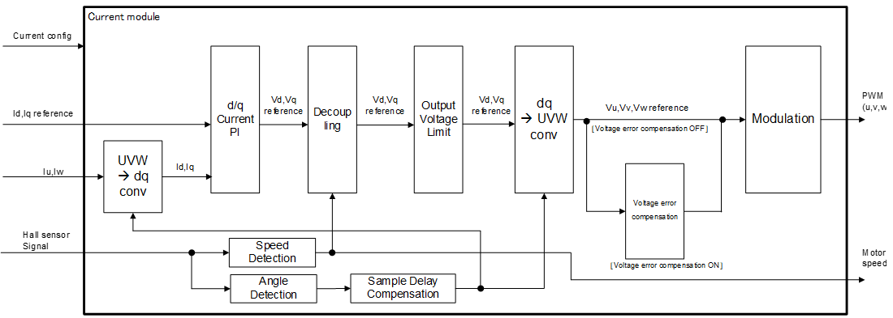

Current Control (Inner-loop)
Overview
Current control (inner loop) is the innermost control loop in a motor
control system, designed to regulate the motor current with high
precision and fast response. This loop receives torque commands (current
references) from the upper-layer speed control loop (outer loop) and
controls the inverter switching devices to drive the desired current
through the motor.

Figure 1 Functional Block Diagram of Current Control
Features
- Primarily uses PI (Proportional–Integral) control
- Feedforward compensation and decoupling control may be added in
parallel to improve responsiveness and reduce interference at high
speeds
- For permanent magnet synchronous motors (PMSMs), two current
components—d-axis (flux) and q-axis (torque)—are controlled
independently
Inputs:
- d-axis and q-axis current references
- Current error (reference – measured current)
Output:
- Voltage command to the inverter (PWM modulation signal)
Control Period
The control loop is synchronized with the PWM control period.
Depending on the current detection method, the period differs.
With shunt sensing, control is executed at the carrier valley; with
inline sensing, control is executed at both the carrier peak and
valley.
For example, with a 20 kHz PWM carrier, if control is executed only
at the valley, the current control period becomes 50 µs.
Current PI
The current PI (Proportional–Integral) controller is the core control
method within the current control loop of a motor control system. It
takes the error between the commanded current and measured current and
outputs a voltage command applied to the motor. In motor control,
especially for PMSMs, separate PI controllers are used for the two
orthogonal current components: d-axis (flux) and q-axis (torque).
The current PI controller is expressed by the following equation:
u(t) = Kp·e(t) + Ki·∫e(t)dt
- u(t): Control output (voltage command)
- e(t): Error signal (commanded current − measured
current)
- Kp: Proportional gain
- Ki: Integral gain
In AC motor control such as PMSMs, current control is commonly
performed in the rotating reference frame (d–q axes).
Proportional (P)
Control and Integral (I) Control
Proportional Control
- Role: Generates control output proportional to the
present error
- Characteristics: Improves responsiveness but cannot
completely eliminate steady-state error
- Gain Tuning: Too high → oscillation or instability;
too low → slow response
Integral Control
- Role: Generates output proportional to the
accumulated error to eliminate steady-state error
- Characteristics: Increases system order, affecting
transient response
- Gain Tuning: Too high → overshoot or increased
oscillation; too low → slow convergence of steady-state error
d-axis
Current Control (Flux Control) and q-axis Current Control (Torque
Control)
Current control is applied to the d-axis (flux) and q-axis (torque).
Their purposes and characteristics are:
d-axis Current Control (Flux Control)
- Purpose: Controls flux (typically 0, or negative
during field‑weakening)
- Characteristics: Strengthens or weakens the
magnetizing effect. Used in startup current pull‑in control, MTPA, and
field‑weakening control.
- Gain Setting: Typically set equal to the q-axis
gain
q-axis Current Control (Torque Control)
- Purpose: Direct control of torque generation
- Characteristics: Strongly affects motor
responsiveness, so fast response is required
- Gain Setting: Usually set relatively high for
responsiveness; however, excessive gain can cause oscillation